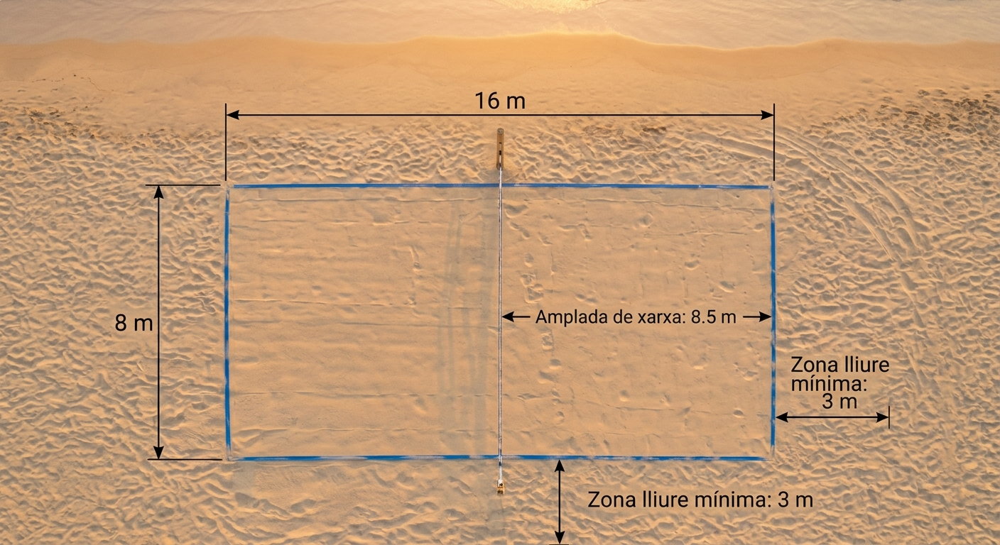
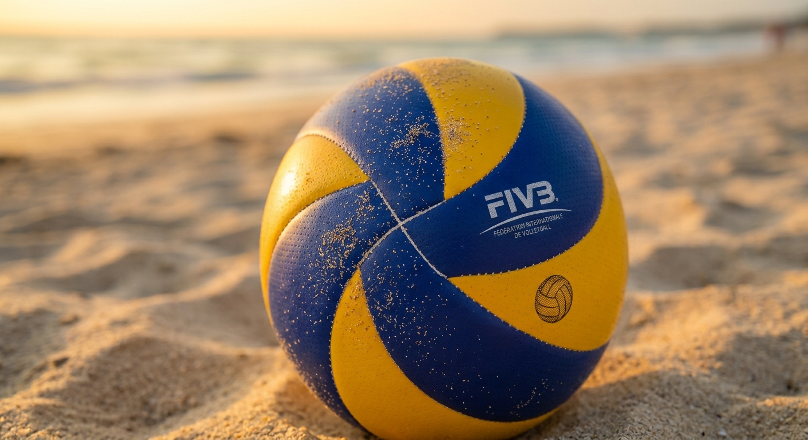

Diagrama Tècnic del Camp

Benvinguts al portal oficial del vòlei platja. Aquí trobaràs les regles de joc, l'esquema de la pista i la classificació actualitzada dels tornejos locals.
El vòlei platja es juga en una pista de sorra rectangular dividida per una xarxa central.


Consulta la taula completa de posicions i puntuacions de la lliga local de vòlei platja.
Veure la Classificació Completa